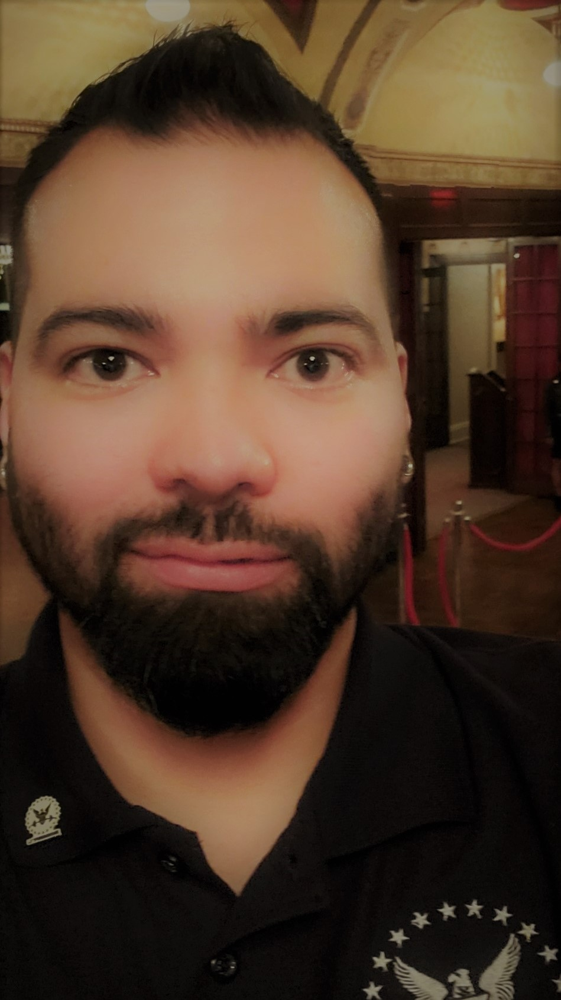
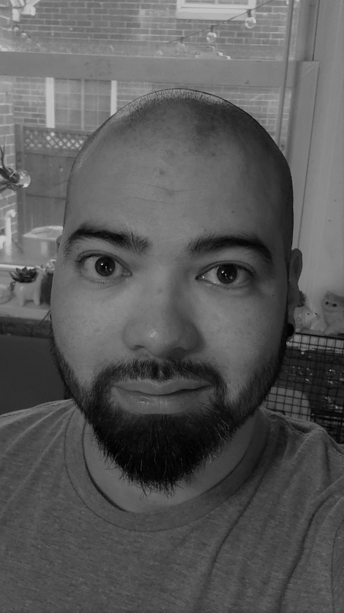

Adding some fun and interesting facts about myself here! What would you like to know? How I got here? My hobbies? My skillsets?
I currently live in Milwaukee, WI with my wife Jenn and my two kids. My wife and I met through a mutual friend in high school in 2001. After graduating
in 2002 I had a short lived experience with college. In May of 2004 I enlisted in the Army as a "Healthcare Specialist/Combat Medic" where I served
for a total of 6 years. In those 6 years, I married my highschool sweetheart, moved my wife and first child to Louisiana where my unit deployed twice
(once to Afghanistan and once to Iraq) and welcomed our second child into the world. During the deployment to Iraq I suffered injuries to my lower back
that would ultimately medically retire me from service in 2010.
After separating from the Army, normal life was a true struggle to get a grasp on. Fast forward 8 years of learning to integrate with everyday life, I
learned how to develop myself into what I am striving to be today.

